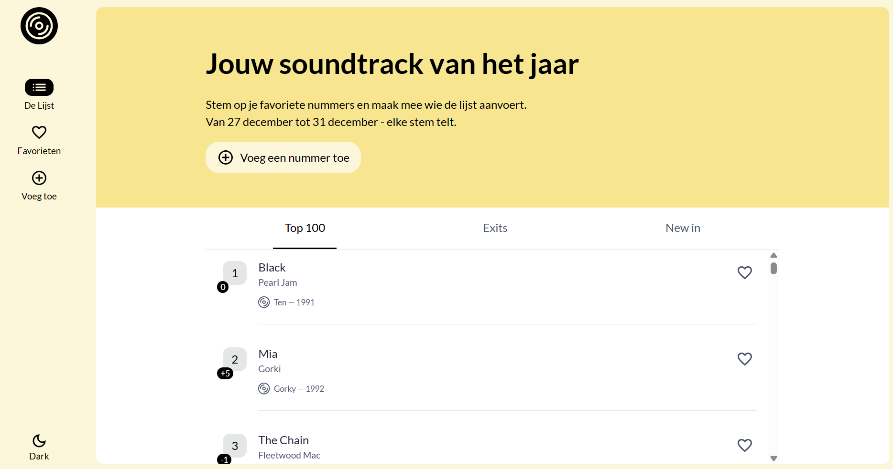

De Tijdloze Case
For this project, I built an app that retrieves live data via a Fetch API. The challenge was to allow users to add and remove songs, while the list is preserved via Local and Session Storage. An educational assignment in which I dived deep into asynchronous JavaScript and browser data management.
